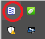
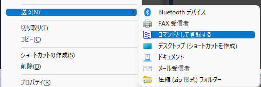

基本的な使い方
アプリを起動する
soyokaze.exeを実行するとアプリが起動する。 起動直後は入力画面 が表示される。
また、タスクトレイにアイコンが表示される。

アプリを終了する
入力画面でexitコマンドを実行するか、タスクトレイから終了を選択する。
exitコマンドを実行
タスクトレイからの終了
入力画面を表示する
アプリが起動している状態でランチャー呼び出しキー(デフォルト設定:Alt-Space)を押下すると、入力画面が表示される。

この画面でキーワードを入力し、Enterキーを押下すると、キーワードに関連付けた各種操作を実行できる。
また、Tabキーを押すと、入力中のキーワードを補完することができる。
① アイコン表示欄
選択している候補に関連付けられたアイコンを表示する
② コメント表示欄
選択している候補の説明を表示する
ここをドラッグしてウインドウ表示位置を変えることができる
③ 入力欄
ここにキーワード(やパラメータ)を入力する。
Ctrl+Backspaceで入力中のキーワードを単語単位で削除するTabキーを押下するとキーワードを補完するEscキーを押下すると、入力中のキーワードを消去する。
入力中のキーワードが空のときは入力画面を非表示にする。
④ 候補リスト
入力欄のキーワードに該当する候補の一覧を表示する
矢印キー(↑↓）やマウスクリックで候補を変更することができる
入力欄に文字が入力されていると表示される
⑤ ガイド
コマンドを実行したときに実行される動作をキー別に表示する
この画面がでているときにF1キーを押下すると、マニュアル(このファイル)を開く。
コマンドを実行する
入力画面にキーワードを入力してEnter⏎キーを押下すると、キーワードに応じてコマンドを実行することができる。
コマンドを登録する
セットアップ直後はコマンドが何も登録されていないため、
後述の方法によりコマンドを登録する必要がある。
なお、コマンドとして登録していなくても実行できる機能もある。
本アプリでは以下の方法でコマンドを登録することができる。
各方法の詳細について後述する。
newコマンドで登録する
入力画面からnewコマンドを実行すると、コマンドの種類を選択する画面が表示される。
↓
コマンド種別を選択し、OKボタンを押下すると、選択した種別に応じたコマンド編集画面が表示される。
↓※ 通常コマンドのコマンド編集画面

コマンド編集画面で新規登録キーワードや紐づけるプログラムへのパスなどの情報を入力し、OKを押すと、コマンドとして登録される。
registerwinコマンドで登録する
入力画面からregistwinコマンドを実行すると、直前にアクティブになっていたウインドウの実行プロセスを登録する画面が表示される。
↓
対象ウインドウをキャプチャして登録する
入力画面のアイコン欄をドラッグして、登録したいウインドウにドロップすると、そのウインドウの実行プロセスを登録する画面が表示される。
↓
コンテキストメニューの送る>コマンドとして登録する
アプリケーション設定の基本＞ショートカット登録 から「送る」から登録できるようにするをチェックしている場合、エクスプローラの送るに登録用のメニュー項目が表示される。
登録したいファイルをエクスプローラ上で右クリックして、送る>コマンドとして登録するを選択すると、そのファイルを登録するためのコマンド編集画面が表示される
↓

ファイルやフォルダをDrag&Dropして登録する
エクスプローラ上のファイルやフォルダのアイコンをドラッグして、入力画面上にドロップすると、 該当するファイルやフォルダをコマンドとして登録することができる。
制限事項
ランチャーが管理者権限で動作している場合に、一般権限で動作しているプロセスのアイコンをこの方法で登録することはできない。